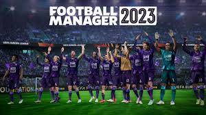
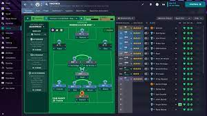

review football maneger 2023
Primeiramente, gostaria de dizer que esta será uma review “rápida”. É um grande desafio encontrar o que falar de Football Manager, uma série que assim como outros jogos de esportes lançados anualmente, sofre com estagnação e poucas novidades relevantes que fazem o título valer a pena se comparado a edições anteriores.
De fato, a minha ideia inicial era fazer essa review logo após o FIFA 23 para mostrar os dois lados do futebol que estão disponíveis no Switch. Uma combinação de meu trabalho ter me deixado ocupado e minha própria decisão de experimentar mais a fundo o título, me fez acabar enrolando para produzir este texto.

Inicialmente eu planejava começar a escrever um texto sobre Football Manager 2023 Touch assim que eu conseguisse ganhar a tão famosa Liga dos Campeões da UEFA, que é uma das principais novidades do game este ano. Todavia, assim que adquiri o jogo em uma das suas promoções, eu acabei começando um save que durante um tempo tive o objetivo de colocar um clube carioca junto dos outros quatro grandes times do Rio na Série A do Brasileirão (no caso o tradicionalíssimo Volta Redonda) e só depois de um tempo é que comecei um save com opções de clubes europeus, onde só então recentemente conquistei o tão sonhado troféu com o Milan, uma conquista nada fácil visto um problema que mencionarei mais para frente.
O problema é que quando consegui o feito, já era início de Maio, e então senti que não valia mais a pena escrever um texto de um jogo cuja versão 2024 está “ próxima de ser anunciada”. Eis então que Marcos, dono deste site, me chega hoje, sábado (27 de Abril de 2023) às 11:40 no whatsapp com a mensagem “ Estou vendo aqui e este será o primeiro mês que você tira folga do site e não entrega nada, parabéns”.
